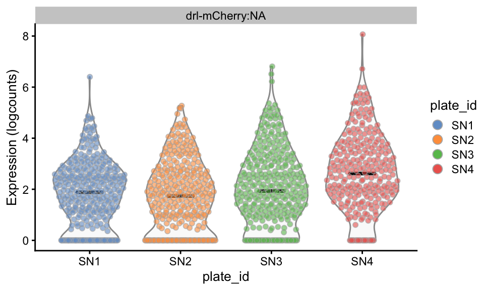
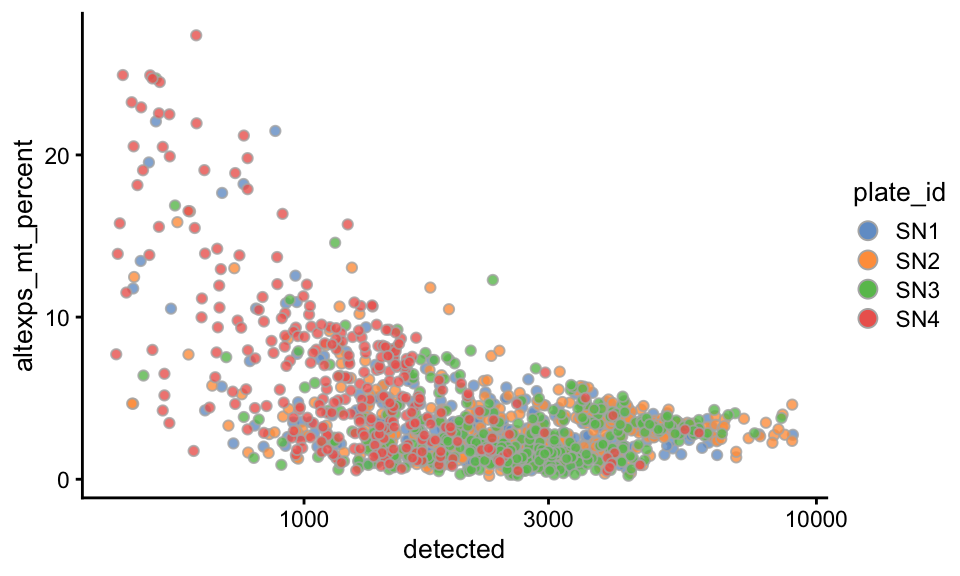
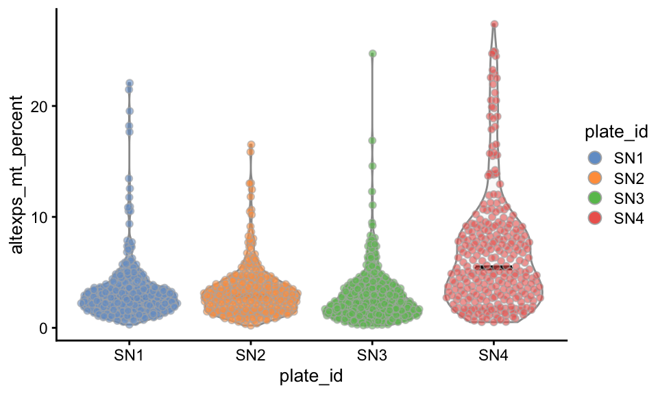
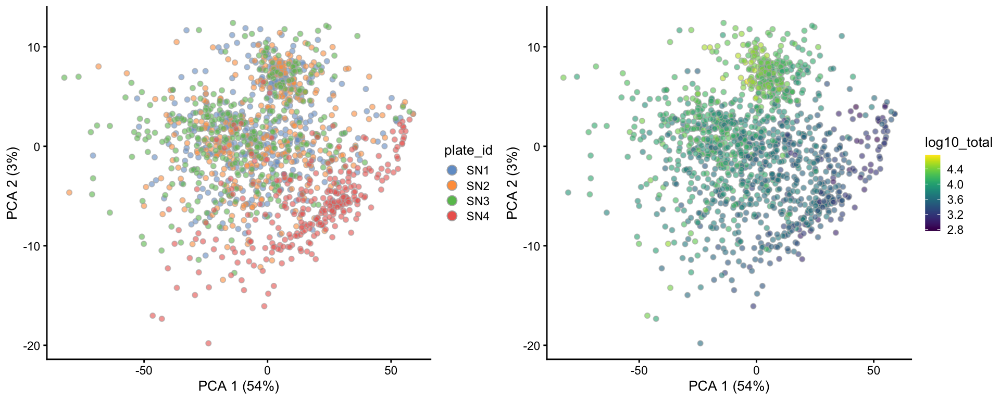

Preprocessing
Helena L. Crowell
June 16, 2020
Last updated: 2020-06-16
Checks: 6 1
Knit directory: workflowr/
This reproducible R Markdown analysis was created with workflowr (version 1.6.2). The Checks tab describes the reproducibility checks that were applied when the results were created. The Past versions tab lists the development history.
The R Markdown is untracked by Git. To know which version of the R Markdown file created these results, you’ll want to first commit it to the Git repo. If you’re still working on the analysis, you can ignore this warning. When you’re finished, you can run wflow_publish to commit the R Markdown file and build the HTML.
Great job! The global environment was empty. Objects defined in the global environment can affect the analysis in your R Markdown file in unknown ways. For reproduciblity it’s best to always run the code in an empty environment.
The command set.seed(20190529) was run prior to running the code in the R Markdown file. Setting a seed ensures that any results that rely on randomness, e.g. subsampling or permutations, are reproducible.
Great job! Recording the operating system, R version, and package versions is critical for reproducibility.
Nice! There were no cached chunks for this analysis, so you can be confident that you successfully produced the results during this run.
Great job! Using relative paths to the files within your workflowr project makes it easier to run your code on other machines.
Great! You are using Git for version control. Tracking code development and connecting the code version to the results is critical for reproducibility.
The results in this page were generated with repository version 9289541. See the Past versions tab to see a history of the changes made to the R Markdown and HTML files.
Note that you need to be careful to ensure that all relevant files for the analysis have been committed to Git prior to generating the results (you can use wflow_publish or wflow_git_commit). workflowr only checks the R Markdown file, but you know if there are other scripts or data files that it depends on. Below is the status of the Git repository when the results were generated:
Ignored files:
Ignored: .DS_Store
Ignored: analysis/.DS_Store
Ignored: data/.DS_Store
Ignored: output/.DS_Store
Untracked files:
Untracked: analysis/0-preprocessing.Rmd
Untracked: analysis/1-clustering.Rmd
Untracked: analysis/2-annotation.Rmd
Untracked: analysis/3-hand2.Rmd
Untracked: analysis/4-bloodvessel.Rmd
Untracked: code/Rehrauer18_heatmap.R
Untracked: code/figures.R
Untracked: code/make_tx2gene.R
Untracked: code/summarize_zumis_counts.R
Untracked: code/utils.R
Untracked: data/Rehrauer18.csv
Untracked: data/UMI_counts_merged.rds
Untracked: data/cluster_anno.xlsx
Untracked: data/cluster_anno_hand2.xlsx
Untracked: data/figure requests.docx
Untracked: data/hox_genes.txt
Untracked: data/marker_genes.txt
Untracked: data/marker_genes.xlsx
Untracked: data/marker_genes_hand2.xlsx
Untracked: data/markers_for_labels.xlsx
Untracked: data/markers_hoxgenes.xlsx
Untracked: data/~$cluster_anno.xlsx
Untracked: data/~$gure requests.docx
Untracked: data/~$marker_genes.xlsx
Untracked: figures/
Untracked: output/mgs_Seurat.csv
Untracked: output/sce_anno.rds
Untracked: output/sce_clust.rds
Untracked: output/sce_prep.rds
Untracked: output/so_anno.rds
Untracked: output/so_clust.rds
Unstaged changes:
Modified: analysis/_site.yml
Modified: analysis/index.Rmd
Deleted: analysis/license.Rmd
Note that any generated files, e.g. HTML, png, CSS, etc., are not included in this status report because it is ok for generated content to have uncommitted changes.
There are no past versions. Publish this analysis with wflow_publish() to start tracking its development.
Load packages
library(biomaRt)
library(dplyr)
library(scater)
library(scran)
library(SingleCellExperiment)Data preparation
Load data
counts <- readRDS(file.path("data", "UMI_counts_merged.rds"))Construct SCE
ss <- strsplit(colnames(counts), "_")
pids <- vapply(ss, .subset, i = 1, character(1))
cd <- DataFrame(plate_id = pids, row.names = colnames(counts))
(sce <- SingleCellExperiment(
assays = list(counts = counts),
colData = cd))class: SingleCellExperiment
dim: 29003 1520
metadata(0):
assays(1): counts
rownames(29003): drl_mCherry ENSDARG00000000001 ... ENSDARG00000109060
ENSDARG00000109090
rowData names(0):
colnames(1520): SN1_AAACAGGC SN1_AAAGCGGA ... SN4_TTTGTGTC SN4_TTTTCGCC
colData names(1): plate_id
reducedDimNames(0):
altExpNames(0):Filtering & quality control
Get gene symbols from Ensembl
ensembl <- useMart("ensembl",
dataset = "drerio_gene_ensembl",
host = "dec2017.archive.ensembl.org")
map <- getBM(
attributes = c("ensembl_gene_id", "zfin_id_symbol", "chromosome_name"),
filter = "ensembl_gene_id", value = rownames(sce), mart = ensembl)
# check that all genes are annoted in Ensembl
setdiff(rownames(sce), map$ensembl_gene_id)[1] "drl_mCherry"# replace problematic characters
rownames(sce) <- gsub("_", "-", rownames(sce))
# add gene symbols to SCE rownames
m <- match(rownames(sce), map$ensembl_gene_id)
s <- map$zfin_id_symbol[m]
rownames(sce) <- paste(rownames(sce), s, sep = ":")
rowData(sce)$symbol <- s
# get MT genes as controls
mt <- map$chromosome_name == "MT"
mt <- rownames(sce)[mt[m]]
(mt <- mt[!is.na(mt)]) [1] "ENSDARG00000063895:mt-nd1" "ENSDARG00000063899:mt-nd2"
[3] "ENSDARG00000063905:mt-co1" "ENSDARG00000063908:mt-co2"
[5] "ENSDARG00000063910:mt-atp8" "ENSDARG00000063911:mt-atp6"
[7] "ENSDARG00000063914:mt-nd3" "ENSDARG00000063916:mt-nd4l"
[9] "ENSDARG00000063921:mt-nd5" "ENSDARG00000063922:mt-nd6"
[11] "ENSDARG00000063924:mt-cyb" "ENSDARG00000080337:"
[13] "ENSDARG00000080630:" "ENSDARG00000081280:"
[15] "ENSDARG00000081369:" "ENSDARG00000081443:"
[17] "ENSDARG00000081475:" "ENSDARG00000081938:"
[19] "ENSDARG00000082084:" "ENSDARG00000082716:"
[21] "ENSDARG00000082753:" "ENSDARG00000082789:"
[23] "ENSDARG00000083046:" "ENSDARG00000083312:"
[25] "ENSDARG00000083462:" "ENSDARG00000083480:"
[27] "ENSDARG00000063912:mt-co3" "ENSDARG00000080151:"
[29] "ENSDARG00000083118:" "ENSDARG00000083519:"
[31] "ENSDARG00000080401:" altExp(sce, "mt") <- sce[mt, ]Compute QC metrics
# exclude undetected genes
sce <- sce[rowSums(counts(sce) > 0) > 0, ]
# calculate QC metrics
sce <- addPerFeatureQC(sce)
sce <- addPerCellQC(sce)Filter outlier cells
sce$ol <- isOutlier(sce$detected, nmads = 2, type = "both", log = TRUE)
as.data.frame(colData(sce)) %>%
ggplot(aes(x = detected, alpha = ol)) +
scale_alpha_manual(values = c("TRUE" = 0.2, "FALSE" = 0.8)) +
geom_histogram(bins = 100) + theme_bw()
sce <- sce[, !sce$ol]
table(sce$plate_id)
SN1 SN2 SN3 SN4
349 339 351 287 QC plots
Total features vs. %(MT)
fix_lgd <- guides(fill = guide_legend(
override.aes = list(size = 3, alpha = 1)))
plotColData(sce,
x = "detected", y = "altexps_mt_percent",
colour_by = "plate_id", point_alpha = 0.8) +
scale_x_log10() + fix_lgd
Distributions of %(MT) by plate
plotColData(sce, x = "plate_id", y = "altexps_mt_percent",
colour_by = "plate_id", show_median = TRUE) + fix_lgd
Highest expressing features
plotHighestExprs(sce, colour_cells_by = "detected")
Normalization
# compute log-normalized counts
sce <- sce[rowSums(counts(sce) > 1) >= 10, ]
sce <- computeSumFactors(sce)
sce <- computeSpikeFactors(sce, "mt")
sce <- logNormCounts(sce)Expression frequency vs. mean
rowData(sce)$mean_expr <- rowMeans(logcounts(sce))
rowData(sce)$is_mt <- rownames(sce) %in% mt
plotRowData(sce, x = "mean_expr", y = "detected", colour_by = "is_mt") +
geom_hline(yintercept = 50, lty = 2) +
geom_text(x = 5, y = 45, label = paste(
sum(rowData(sce)$detected >= 50),
"genes expressed in at least 50% of cells")) +
geom_hline(yintercept = 25, lty = 3) +
geom_text(x = 5, y = 20, label = paste(
sum(rowData(sce)$detected >= 25),
"genes expressed in at least 25% of cells")) + fix_lgd
Dimension reduction
# run PCA & t-SNE
sce <- runPCA(sce)
sce <- runTSNE(sce)PCA colored by plate ID & library size
sce$log10_total <- log10(sce$total + 1)
multiplot(cols = 2,
plotPCA(sce, colour_by = "plate_id") + fix_lgd,
plotPCA(sce, colour_by = "log10_total") + fix_lgd)
t-SNE colored by plate ID & %(MT)
multiplot(cols = 2,
plotTSNE(sce, colour_by = "plate_id") + fix_lgd,
plotTSNE(sce, colour_by = "altexps_mt_percent") + fix_lgd)
Write SCE to .rds
mCherry expression
plotExpression(sce,
features = "drl-mCherry:NA", x = "plate_id",
colour_by = "plate_id", show_median = TRUE) + fix_lgd
# exlude plate 4 as it seems to be of low quality
sce <- sce[, sce$plate_id != "SN4"]
saveRDS(sce, file.path("output", "sce_prep.rds"))
sessionInfo()R version 4.0.0 RC (2020-04-21 r78267)
Platform: x86_64-apple-darwin17.0 (64-bit)
Running under: macOS Catalina 10.15.5
Matrix products: default
BLAS: /Library/Frameworks/R.framework/Versions/4.0/Resources/lib/libRblas.dylib
LAPACK: /Library/Frameworks/R.framework/Versions/4.0/Resources/lib/libRlapack.dylib
locale:
[1] en_US.UTF-8/en_US.UTF-8/en_US.UTF-8/C/en_US.UTF-8/en_US.UTF-8
attached base packages:
[1] parallel stats4 stats graphics grDevices utils datasets
[8] methods base
other attached packages:
[1] scran_1.16.0 scater_1.16.1
[3] ggplot2_3.3.1 SingleCellExperiment_1.10.1
[5] SummarizedExperiment_1.18.1 DelayedArray_0.14.0
[7] matrixStats_0.56.0 Biobase_2.48.0
[9] GenomicRanges_1.40.0 GenomeInfoDb_1.24.0
[11] IRanges_2.22.2 S4Vectors_0.26.1
[13] BiocGenerics_0.34.0 dplyr_1.0.0
[15] biomaRt_2.44.0 workflowr_1.6.2
loaded via a namespace (and not attached):
[1] bitops_1.0-6 fs_1.4.1
[3] bit64_0.9-7 progress_1.2.2
[5] httr_1.4.1 rprojroot_1.3-2
[7] tools_4.0.0 backports_1.1.7
[9] R6_2.4.1 irlba_2.3.3
[11] vipor_0.4.5 DBI_1.1.0
[13] colorspace_1.4-1 withr_2.2.0
[15] tidyselect_1.1.0 gridExtra_2.3
[17] prettyunits_1.1.1 bit_1.1-15.2
[19] curl_4.3 compiler_4.0.0
[21] git2r_0.27.1 BiocNeighbors_1.6.0
[23] labeling_0.3 scales_1.1.1
[25] askpass_1.1 rappdirs_0.3.1
[27] stringr_1.4.0 digest_0.6.25
[29] rmarkdown_2.2 XVector_0.28.0
[31] pkgconfig_2.0.3 htmltools_0.4.0
[33] limma_3.44.3 dbplyr_1.4.4
[35] rlang_0.4.6 RSQLite_2.2.0
[37] DelayedMatrixStats_1.10.0 farver_2.0.3
[39] generics_0.0.2 BiocParallel_1.22.0
[41] RCurl_1.98-1.2 magrittr_1.5
[43] BiocSingular_1.4.0 GenomeInfoDbData_1.2.3
[45] Matrix_1.2-18 Rcpp_1.0.4.6
[47] ggbeeswarm_0.6.0 munsell_0.5.0
[49] viridis_0.5.1 lifecycle_0.2.0
[51] stringi_1.4.6 yaml_2.2.1
[53] edgeR_3.30.3 zlibbioc_1.34.0
[55] Rtsne_0.15 BiocFileCache_1.12.0
[57] grid_4.0.0 blob_1.2.1
[59] promises_1.1.1 dqrng_0.2.1
[61] crayon_1.3.4 lattice_0.20-41
[63] cowplot_1.0.0 hms_0.5.3
[65] locfit_1.5-9.4 knitr_1.28
[67] pillar_1.4.4 igraph_1.2.5
[69] codetools_0.2-16 XML_3.99-0.3
[71] glue_1.4.1 evaluate_0.14
[73] vctrs_0.3.1 httpuv_1.5.4
[75] gtable_0.3.0 openssl_1.4.1
[77] purrr_0.3.4 assertthat_0.2.1
[79] xfun_0.14 rsvd_1.0.3
[81] later_1.1.0.1 viridisLite_0.3.0
[83] tibble_3.0.1 AnnotationDbi_1.50.0
[85] beeswarm_0.2.3 memoise_1.1.0
[87] statmod_1.4.34 ellipsis_0.3.1